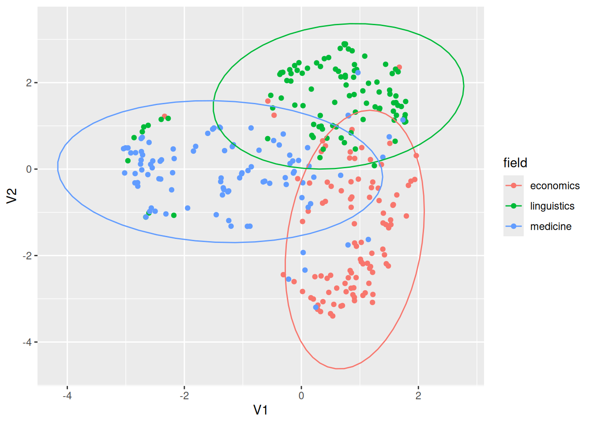

library(tidyverse)5 Работа с текстами
Не существует какого-то единого алгоритма анализа текстов, многое зависит от задач. Однако все обычные сферы анализа данных применимы к текстам: иногда нужно выделить какие-то составляющие текста (частота встречаемости каких-то единиц, сентимент анализ), иногда нужно выделить уникальные единицы свойственные какой-то группе текстов (мера tf-idf), иногда нужно кластеризовать тексты, чтобы найти похожие/разные тексты (например, классическая задача определения спамерских сообщений). Такие задачи находятся на стыке лингвистики и компьютерных наук. Существуют и более сложные/интеллектуальные задачи, которые традиционно относят к области искусственного интеллекта, такие как перевод с одного языка на другой, саммаризация текста, вопросно-ответные системы и другие. В данном разделе мы коснемся лишь первой группы задач и пакетов, написанных на R, для их решения.
5.1 Загрузка текстов в R
В пакете readr (входит в tidyverse) для чтения текста есть функция read_lines(). В качестве первой переменной может выступать путь к файлу на компьютере или интернет ссылка:
alices_adventures_in_wonderland <- read_lines("https://raw.githubusercontent.com/agricolamz/daR4hs/main/data/w5_alices_adventures_in_wonderland.txt")
head(alices_adventures_in_wonderland, 20) [1] "The Project Gutenberg eBook of Alice's Adventures in Wonderland"
[2] " "
[3] "This ebook is for the use of anyone anywhere in the United States and"
[4] "most other parts of the world at no cost and with almost no restrictions"
[5] "whatsoever. You may copy it, give it away or re-use it under the terms"
[6] "of the Project Gutenberg License included with this ebook or online"
[7] "at www.gutenberg.org. If you are not located in the United States,"
[8] "you will have to check the laws of the country where you are located"
[9] "before using this eBook."
[10] ""
[11] "Title: Alice's Adventures in Wonderland"
[12] ""
[13] ""
[14] "Author: Lewis Carroll"
[15] ""
[16] "Release date: June 27, 2008 [eBook #11]"
[17] " Most recently updated: March 30, 2021"
[18] ""
[19] "Language: English"
[20] "" В большинстве случаев тексты получится считать, однако иногда при работе со старыми архивами могут возникнуть проблемы с кодировками. Например, все тексты в старейшей интернет-библиотеке на русском языке — библиотеке Максима Машкова (https://lib.ru/) — записаны в KOI8-R:
read_lines("https://raw.githubusercontent.com/agricolamz/daR4hs/main/data/w5_the_captains_daughter_koi8r.txt",
n_max = 15) [1] " \xe1\xcc\xc5\xcb\xd3\xc1\xce\xc4\xd2 \xf3\xc5\xd2\xc7\xc5\xc5\xd7\xc9\xde \xf0\xd5\xdb\xcb\xc9\xce. \xeb\xc1\xd0\xc9\xd4\xc1\xce\xd3\xcb\xc1\xd1 \xc4\xcf\xde\xcb\xc1"
[2] ""
[3] " ---------------------------------------------------------------"
[4] " OCR: \xef\xcc\xc5\xc7 \xeb\xcf\xcc\xc5\xd3\xce\xc9\xcb\xcf\xd7"
[5] " Origin: http://www.magister.msk.ru/library/pushkin/pushkin.htm ? http://www.magister.msk.ru/library/pushkin/pushkin.htm"
[6] " ---------------------------------------------------------------"
[7] ""
[8] " \xe2\xc5\xd2\xc5\xc7\xc9 \xde\xc5\xd3\xd4\xd8 \xd3\xcd\xcf\xcc\xcf\xc4\xd5."
[9] " \xf0\xcf\xd3\xcc\xcf\xd7\xc9\xc3\xc1"
[10] ""
[11] ""
[12] ""
[13] " \xe7\xec\xe1\xf7\xe1 I. \xf3\xe5\xf2\xf6\xe1\xee\xf4 \xe7\xf7\xe1\xf2\xe4\xe9\xe9."
[14] ""
[15] "" В функциях пакета readr (т. е. не только в функции read_lines(), но и в функциях read_csv(), read_tsv() и т. п.) есть аргумент locale, который позволяет эксплицитно указать кодировку, а при считывании происходит процесс конвертации в стандартный для многих операционных систем UTF-8. Для текстов на русском языке важны следующие кодировки
KOI8-R, а для украинского языка —KOI8-U;CP1251(также известная под названиемWindows-1251) покрывает и другие кириллические письменности такие как украинский, белорусский, болгарский, сербский, македонский и другие.
read_lines("https://raw.githubusercontent.com/agricolamz/daR4hs/main/data/w5_the_captains_daughter_koi8r.txt",
locale = locale(encoding = "KOI8-R"),
n_max = 15) [1] " Александр Сергеевич Пушкин. Капитанская дочка"
[2] ""
[3] " ---------------------------------------------------------------"
[4] " OCR: Олег Колесников"
[5] " Origin: http://www.magister.msk.ru/library/pushkin/pushkin.htm ? http://www.magister.msk.ru/library/pushkin/pushkin.htm"
[6] " ---------------------------------------------------------------"
[7] ""
[8] " Береги честь смолоду."
[9] " Пословица"
[10] ""
[11] ""
[12] ""
[13] " ГЛАВА I. СЕРЖАНТ ГВАРДИИ."
[14] ""
[15] "" read_lines("https://raw.githubusercontent.com/agricolamz/daR4hs/main/data/w5_the_captains_daughter_cp1251.txt",
locale = locale(encoding = "CP1251"),
n_max = 15) [1] " Александр Сергеевич Пушкин. Капитанская дочка"
[2] ""
[3] " ---------------------------------------------------------------"
[4] " OCR: Олег Колесников"
[5] " Origin: http://www.magister.msk.ru/library/pushkin/pushkin.htm ? http://www.magister.msk.ru/library/pushkin/pushkin.htm"
[6] " ---------------------------------------------------------------"
[7] ""
[8] " Береги честь смолоду."
[9] " Пословица"
[10] ""
[11] ""
[12] ""
[13] " ГЛАВА I. СЕРЖАНТ ГВАРДИИ."
[14] ""
[15] "" Для просмотра и изменения кодировки внутри R следует использовать функцию Encoding():
x <- "fa\xE7ile"
x[1] "fa\xe7ile"Encoding(x)[1] "unknown"Теперь можем использовать функцию присваивания:
Encoding(x) <- "latin1"
x[1] "façile"Encoding(x)[1] "latin1"Если необходимо преобразовать из одной кодировки в другую, следует использовать функцию iconv():
x <- iconv(x, "latin1", "UTF-8")
Encoding(x)[1] "UTF-8"x[1] "façile"5.2 Библиотеки текстов
5.2.1 Пакет gutenbergr
Пакет gutenbergr является API для очень старого проекта Gutenberg.
library(gutenbergr)Все самое важное в пакете хранится во встроенном датасете gutenberg_metadata:
str(gutenberg_metadata)tibble [72,569 × 8] (S3: tbl_df/tbl/data.frame)
$ gutenberg_id : int [1:72569] 1 2 3 4 5 6 7 8 9 10 ...
$ title : chr [1:72569] "The Declaration of Independence of the United States of America" "The United States Bill of Rights\r\nThe Ten Original Amendments to the Constitution of the United States" "John F. Kennedy's Inaugural Address" "Lincoln's Gettysburg Address\r\nGiven November 19, 1863 on the battlefield near Gettysburg, Pennsylvania, USA" ...
$ author : chr [1:72569] "Jefferson, Thomas" "United States" "Kennedy, John F. (John Fitzgerald)" "Lincoln, Abraham" ...
$ gutenberg_author_id: int [1:72569] 1638 1 1666 3 1 4 NA 3 3 NA ...
$ language : chr [1:72569] "en" "en" "en" "en" ...
$ gutenberg_bookshelf: chr [1:72569] "Politics/American Revolutionary War/United States Law" "Politics/American Revolutionary War/United States Law" "" "US Civil War" ...
$ rights : chr [1:72569] "Public domain in the USA." "Public domain in the USA." "Public domain in the USA." "Public domain in the USA." ...
$ has_text : logi [1:72569] TRUE TRUE TRUE TRUE TRUE TRUE ...
- attr(*, "date_updated")= Date[1:1], format: "2022-12-19"Например, сейчас мы можем понять, сколько книг на разных языках можно скачать из проекта:
gutenberg_metadata |>
count(language, sort = TRUE)Как видно, в основном это тексты на английском. Сколько авторов в датасете?
gutenberg_metadata |>
count(author, sort = TRUE)Сколько произведений Джейн Остин (не перепутайте с другими Остин) есть в датасете?
gutenberg_metadata |>
filter(author == "Austen, Jane") |>
distinct(gutenberg_id, title)Давайте скачаем “Эмму”:
emma <- gutenberg_download(158)Determining mirror for Project Gutenberg from https://www.gutenberg.org/robot/harvestUsing mirror http://aleph.gutenberg.orgemma# A tibble: 16,488 × 2
gutenberg_id text
<int> <chr>
1 158 "Emma"
2 158 ""
3 158 "by Jane Austen"
4 158 ""
5 158 ""
6 158 "Contents"
7 158 ""
8 158 " VOLUME I."
9 158 " CHAPTER I."
10 158 " CHAPTER II."
# ℹ 16,478 more rowsМожно скачивать сразу несколько книг. Давайте добавим еще “Леди Сьюзен”:
books <- gutenberg_download(c(158, 946), meta_fields = "title")
books# A tibble: 19,028 × 3
gutenberg_id text title
<int> <chr> <chr>
1 158 "Emma" Emma
2 158 "" Emma
3 158 "by Jane Austen" Emma
4 158 "" Emma
5 158 "" Emma
6 158 "Contents" Emma
7 158 "" Emma
8 158 " VOLUME I." Emma
9 158 " CHAPTER I." Emma
10 158 " CHAPTER II." Emma
# ℹ 19,018 more rowsbooks |>
count(title)# A tibble: 2 × 2
title n
<chr> <int>
1 Emma 16488
2 Lady Susan 2540Обратите внимание на аргумент meta_fields, который позволяет кроме самого текста добавить метаданные из gutenberg_metadata в получившийся датафрейм.
5.2.2 Пакет rperseus
Пакет rperseus предоставляет API для текстов Perseus Digital Library, где хранятся тексты на греческом и латинском языках.
На момент создания этих материалов пакет не был опубликован в CRAN, так что для его установки нужно выполнить следующую команду (если в вашей системе не стоит пакета remotes, то его можно установить при помощи стандартных install.packages("remotes")):
remotes::install_github("ropensci/rperseus")Загружаем библиотеку:
library(rperseus)Библиотечный каталог пакета rperseus находится в переменной perseus_catalog:
str(perseus_catalog)tibble [2,291 × 5] (S3: tbl_df/tbl/data.frame)
$ urn : chr [1:2291] "urn:cts:latinLit:stoa0215b.stoa001.opp-lat1" "urn:cts:latinLit:stoa0215b.stoa002.opp-lat1" "urn:cts:latinLit:stoa0215b.stoa003.opp-lat1" "urn:cts:latinLit:phi9500.phi035.opp-lat1" ...
$ group_name : chr [1:2291] "Orientius Saint active 430-440" "Orientius Saint active 430-440" "Orientius Saint active 430-440" "Anonymous" ...
$ label : chr [1:2291] "Commonitorium" "Carmina" "Orationes" "Epitaphium Ennodii" ...
$ description: chr [1:2291] "Orientius Saint active 430-440, Commonitorium" "Orientius Saint active 430-440, Carmina" "Orientius Saint active 430-440, Orationes" "Anonymous, Epitaphium Ennodii" ...
$ language : chr [1:2291] "lat" "lat" "lat" "lat" ...На каких языках содержатся тексты?
perseus_catalog |>
count(language)В документации объясняется:
grc— греческий;lat— латинский;eng— английский;hpt— иврит с огласовками;hct— иврит без огласовок;ger— немецкий;oth— другие языки.
Чтобы скачивать тексты, нужно использовать индексы из переменной urn. Давайте скачаем “Исповедь” Августина:
augustins_confession <- get_perseus_text("urn:cts:latinLit:stoa0040.stoa001.opp-lat1")
augustins_confession# A tibble: 13 × 7
text urn group_name label description language section
<chr> <chr> <chr> <chr> <chr> <chr> <int>
1 "Magnus es, domine, et l… urn:… Augustinus Conf… Augustine … lat 1
2 "LIBER SECVNDVS. Recorda… urn:… Augustinus Conf… Augustine … lat 2
3 "LIBER TERTIVS. Veni Kar… urn:… Augustinus Conf… Augustine … lat 3
4 "LIBER QVARTVS. Per idem… urn:… Augustinus Conf… Augustine … lat 4
5 "LIBER QVINTVS. Accipe s… urn:… Augustinus Conf… Augustine … lat 5
6 "LIBER SEXTVS. Spes mea … urn:… Augustinus Conf… Augustine … lat 6
7 "LIBER SEPTIMVS. Iam mor… urn:… Augustinus Conf… Augustine … lat 7
8 "LIBER OCTAVVS. Deus men… urn:… Augustinus Conf… Augustine … lat 8
9 "LIBER NONVS. s o domine… urn:… Augustinus Conf… Augustine … lat 9
10 "LIBER DECIMVS. Cognosca… urn:… Augustinus Conf… Augustine … lat 10
11 "LIBER VNDECIMVS. Numqui… urn:… Augustinus Conf… Augustine … lat 11
12 "LIBER DVODECIMVS. Multa… urn:… Augustinus Conf… Augustine … lat 12
13 "LIBER TERTIVS DECIMVS. … urn:… Augustinus Conf… Augustine … lat 13Кроме того, можно скачать лишь фрагмент, если мы заранее знаем деление книги:
get_perseus_text("urn:cts:latinLit:stoa0040.stoa001.opp-lat1", excerpt = 4)# A tibble: 1 × 7
text urn group_name label description language section
<chr> <chr> <chr> <chr> <chr> <chr> <dbl>
1 "LIBER QVARTVS. Per idem … urn:… Augustinus Conf… Augustine … lat 4К сожалению, пакет не позволяет скачивать много текстов за раз, но в документации описано, как это можно сделать при помощи цикла. Кому-то может показаться полезной функция perseus_parallel(), которая позволяет видеть параллельные фрагменты текста. Проиллюстрируем это на примере Эвменид Эсхила:
get_perseus_text("urn:cts:greekLit:tlg0085.tlg007.perseus-eng2") |>
slice(1) ->
aeschylus_eumenides_eng
get_perseus_text("urn:cts:greekLit:tlg0085.tlg007.perseus-grc2") |>
slice(1) ->
aeschylus_eumenides_grc
aeschylus_eumenides_eng |>
bind_rows(aeschylus_eumenides_grc) |>
perseus_parallel()5.2.3 Библиотека lib.ru
Для текстов на русском языке отдельного пакета не написали, однако на сайте библиотеки lib.ru они уже представлены в машиночитаемом виде, нужно всего лишь выбрать вариант отображения txt, полученную ссылку считать в R, указав корректную кодировку (см. Раздел 5.1):
read_lines("http://lib.ru/LITRA/PUSHKIN/kapitan.txt_Ascii.txt",
locale = locale(encoding = "KOI8-R"),
n_max = 15) [1] " \024Александр Сергеевич Пушкин. Капитанская дочка\025"
[2] ""
[3] " ---------------------------------------------------------------"
[4] " OCR: Олег Колесников"
[5] " Origin: http://www.magister.msk.ru/library/pushkin/pushkin.htm ? http://www.magister.msk.ru/library/pushkin/pushkin.htm"
[6] " ---------------------------------------------------------------"
[7] ""
[8] " Береги честь смолоду."
[9] " Пословица"
[10] ""
[11] ""
[12] ""
[13] " \024ГЛАВА I. СЕРЖАНТ ГВАРДИИ.\025"
[14] ""
[15] "" Если вам нужно скачать весь текст, разумеется, аргумент n_max нужно убрать, он отвечает за количество скачанных строк.
5.3 Библиотека tidytext
Сейчас скачанные тексты записывались в таблицу, где одна строка содержала один абзац. Однако для анализа текста нужно уметь работать с отдельными словами в нем. Для этого тексты нужно привести в tidy формат. С этим отлично справляется пакет tidytext (онлайн книга доступна здесь). Основное “оружие” пакета tidytext функция unnest_tokens(), которая переводит текст в tidy формат. В аргумент output подается вектор с именем будущей переменной, а аргумент input принимает переменную с текстом.
library(tidytext)
alices_adventures_in_wonderland |>
tibble(text = _) |>
unnest_tokens(output = "word", input = text)По умолчанию функция unnest_tokens() удаляет знаки препинания и приводит слова к нижнему регистру. Давайте для удобства удалим все вплоть до оглавления и создадим датафрейм и переменную, из которой будет понятно, где какая глава книги:
alices_adventures_in_wonderland |>
tibble(text = _) |>
slice(54:3405) |>
mutate(chapter = str_extract(text, "CHAPTER .{1,4}\\."),
chapter_title = if_else(str_detect(text, "CHAPTER .{1,4}\\."), lead(text), NA)) |>
fill(chapter, chapter_title) |>
filter(text != chapter) |>
mutate(chapter = str_remove(chapter, "CHAPTER "),
chapter = str_remove(chapter, "\\."),
chapter = as.numeric(as.roman(chapter)),
chapter_title = fct_reorder(chapter_title, chapter)) ->
alice_cleaned
alice_cleanedВ приведенном выше коде интерес представляет функция fill(), которая заполнила пропущенные значения NA значениями выше. В остальном мы использовали несложные регулярные выражения из Раздел 4.8. Кроме того, мы воспользовались встроенными функциями as.roman() и as.numeric(), чтобы преобразовать римские номера глав в арабские. Теперь мы готовы анализировать частотность слов. Создадим переменную tidy_alice и посчитаем слова в каждой из глав:
alice_cleaned |>
unnest_tokens(output = "word", input = text) ->
tidy_alice
tidy_alice |>
count(chapter_title, word, sort = TRUE)В основном, конечно, слова бессмысленные, но давайте посмотрим первый десяток самых частотных слов в каждой из глав:
tidy_alice |>
count(chapter_title, word, sort = TRUE) |>
group_by(chapter_title) |>
slice(1:10) |>
ggplot(aes(n, word))+
geom_col()+
facet_wrap(~chapter_title, scales = "free")+
labs(x = NULL, y = NULL)Хорошие знатоки “Алисы в Зазеркалье”, конечно, многое понимают из распределения местоимений you и, наверное, догадываются, почему это слово становится первым, однако в большинстве случаев служебные слова неинформативны при анализе текстов. Поэтому для некоторых языков составили списки стоп-слов — служебных слов, которые никак не приближают к пониманию текста. Отдельный список уже встроен в пакет tidytext в переменную stop_words (см. также следующий раздел):
stop_wordsТак что используя функцию из семейства ..._join() (см. Раздел 2.13), мы можем повторить наш анализ:
tidy_alice |>
count(chapter_title, word, sort = TRUE) |>
anti_join(stop_words) |>
group_by(chapter_title) |>
slice(1:10) |>
ggplot(aes(n, word))+
geom_col()+
facet_wrap(~chapter_title, scales = "free")+
labs(x = NULL, y = NULL)Joining with `by = join_by(word)`
Получившийся результат уже значительно интереснее, однако алфавитный порядок слов в каждом фасете немного мешает. Для того, чтобы победить это, в пакете tidytext есть несколько функций:
reorder_within()— функция которая позволяет указать группировку, внутри которой нужно упорядочить единицы;scale_y_reordered()/scale_x_reordered()— функция, которая маскирует работуreorder_within()при отображении на графике.
tidy_alice |>
count(chapter_title, word, sort = TRUE) |>
anti_join(stop_words) |>
group_by(chapter_title) |>
slice(1:10) |>
mutate(word = reorder_within(word, within = chapter_title, by = n)) |>
ggplot(aes(n, word))+
geom_col()+
facet_wrap(~chapter_title, scales = "free")+
scale_y_reordered()+
labs(x = NULL, y = NULL)Joining with `by = join_by(word)`Важно отметить, что разделение на слова не единственная цель функции unnest_tokens(), важным бывает анализировать сочетания слов: биграммы, триграммы и т. д.
alice_cleaned |>
unnest_tokens(output = "ngram", input = text, token = "ngrams", n = 2)В связи с этим можно повторить наш анализ с биграммами:
alice_cleaned |>
unnest_tokens(output = "ngram", input = text, token = "ngrams", n = 2) |>
na.omit() |>
separate(ngram, into = c("ngram_1", "ngram_2"), sep = " ") |>
anti_join(tibble(ngram_1 = stop_words$word)) |>
anti_join(tibble(ngram_2 = stop_words$word)) |>
mutate(ngram = str_c(ngram_1, " ", ngram_2)) |>
count(chapter_title, ngram, sort = TRUE) |>
group_by(chapter_title) |>
slice(1:10) |>
mutate(ngram = reorder_within(ngram, within = chapter_title, by = n)) |>
ggplot(aes(n, ngram))+
geom_col()+
facet_wrap(~chapter_title, scales = "free")+
scale_y_reordered() +
labs(x = NULL, y = NULL)Joining with `by = join_by(ngram_1)`
Joining with `by = join_by(ngram_2)`
5.4 Пакет stopwords
Выше мы упомянули, что в пакет tidytext встроен список английских стоп-слов. Стоп-слова для других языков можно раздобыть в пакете stopwords. Вместо имени языка, функция принимает ISO код языка:
library(stopwords)
stopwords("ru") [1] "и" "в" "во" "не" "что" "он" "на"
[8] "я" "с" "со" "как" "а" "то" "все"
[15] "она" "так" "его" "но" "да" "ты" "к"
[22] "у" "же" "вы" "за" "бы" "по" "только"
[29] "ее" "мне" "было" "вот" "от" "меня" "еще"
[36] "нет" "о" "из" "ему" "теперь" "когда" "даже"
[43] "ну" "вдруг" "ли" "если" "уже" "или" "ни"
[50] "быть" "был" "него" "до" "вас" "нибудь" "опять"
[57] "уж" "вам" "сказал" "ведь" "там" "потом" "себя"
[64] "ничего" "ей" "может" "они" "тут" "где" "есть"
[71] "надо" "ней" "для" "мы" "тебя" "их" "чем"
[78] "была" "сам" "чтоб" "без" "будто" "человек" "чего"
[85] "раз" "тоже" "себе" "под" "жизнь" "будет" "ж"
[92] "тогда" "кто" "этот" "говорил" "того" "потому" "этого"
[99] "какой" "совсем" "ним" "здесь" "этом" "один" "почти"
[106] "мой" "тем" "чтобы" "нее" "кажется" "сейчас" "были"
[113] "куда" "зачем" "сказать" "всех" "никогда" "сегодня" "можно"
[120] "при" "наконец" "два" "об" "другой" "хоть" "после"
[127] "над" "больше" "тот" "через" "эти" "нас" "про"
[134] "всего" "них" "какая" "много" "разве" "сказала" "три"
[141] "эту" "моя" "впрочем" "хорошо" "свою" "этой" "перед"
[148] "иногда" "лучше" "чуть" "том" "нельзя" "такой" "им"
[155] "более" "всегда" "конечно" "всю" "между" Пакет предоставляет несколько источников списков:
stopwords_getsources()[1] "snowball" "stopwords-iso" "misc" "smart"
[5] "marimo" "ancient" "nltk" "perseus" Давайте посмотрим какие языки сейчас доступны:
map(stopwords_getsources(), stopwords_getlanguages)[[1]]
[1] "da" "de" "en" "es" "fi" "fr" "hu" "ir" "it" "nl" "no" "pt" "ro" "ru" "sv"
[[2]]
[1] "af" "ar" "hy" "eu" "bn" "br" "bg" "ca" "zh" "hr" "cs" "da" "nl" "en" "eo"
[16] "et" "fi" "fr" "gl" "de" "el" "ha" "he" "hi" "hu" "id" "ga" "it" "ja" "ko"
[31] "ku" "la" "lt" "lv" "ms" "mr" "no" "fa" "pl" "pt" "ro" "ru" "sk" "sl" "so"
[46] "st" "es" "sw" "sv" "th" "tl" "tr" "uk" "ur" "vi" "yo" "zu"
[[3]]
[1] "ar" "ca" "el" "gu" "zh"
[[4]]
[1] "en"
[[5]]
[1] "en" "de" "ru" "ar" "he" "zh_tw" "zh_cn" "ko" "ja"
[[6]]
[1] "grc" "la"
[[7]]
[1] "ar" "az" "da" "nl" "en" "fi" "fr" "de" "el" "hu" "id" "it" "kk" "ne" "no"
[16] "pt" "ro" "ru" "sl" "es" "sv" "tg" "tr"
[[8]]
[1] "grc" "la" Мы видим, что есть несколько источников для русского языка:
length(stopwords("ru", source = "snowball"))[1] 159length(stopwords("ru", source = "stopwords-iso"))[1] 559length(stopwords("ru", source = "marimo"))[1] 333length(stopwords("ru", source = "nltk"))[1] 151В результате мы можем сделать анализ, аналогичный анализу Алисы из прошлого раздела, для текста на русском языке:
captains_daughter <- read_lines("https://raw.githubusercontent.com/agricolamz/daR4hs/main/data/w5_the_captains_daughter_koi8r.txt",
locale = locale(encoding = "KOI8-R"))
captains_daughter |>
tibble(text = _) |>
unnest_tokens(output = "word", input = text) |>
anti_join(tibble(word = stopwords("ru", source = "stopwords-iso"))) |>
count(word, sort = TRUE) |>
slice(1:15) |>
mutate(word = fct_reorder(word, n)) |>
ggplot(aes(n, word))+
geom_col()+
labs(x = NULL, y = NULL, caption = "А. С. Пушкин 'Капитанская дочка'")Joining with `by = join_by(word)`
5.5 Пакет udpipe
Пакет udpipe представляет лемматизацию, морфологический и синтаксический анализ разных языков. Туториал можно найти здесь, там же есть список доступных языков.
library(udpipe)Модели качаются очень долго.
enmodel <- udpipe_download_model(language = "english")Downloading udpipe model from https://raw.githubusercontent.com/jwijffels/udpipe.models.ud.2.5/master/inst/udpipe-ud-2.5-191206/english-ewt-ud-2.5-191206.udpipe to /home/agricolamz/work/online_course/r_for_humanities_and_social_sciences/tasks/daR4hs/book/english-ewt-ud-2.5-191206.udpipe - This model has been trained on version 2.5 of data from https://universaldependencies.org - The model is distributed under the CC-BY-SA-NC license: https://creativecommons.org/licenses/by-nc-sa/4.0 - Visit https://github.com/jwijffels/udpipe.models.ud.2.5 for model license details. - For a list of all models and their licenses (most models you can download with this package have either a CC-BY-SA or a CC-BY-SA-NC license) read the documentation at ?udpipe_download_model. For building your own models: visit the documentation by typing vignette('udpipe-train', package = 'udpipe')Downloading finished, model stored at '/home/agricolamz/work/online_course/r_for_humanities_and_social_sciences/tasks/daR4hs/book/english-ewt-ud-2.5-191206.udpipe'Теперь можно распарсить какое-нибудь предложение:
udpipe("The want of Miss Taylor would be felt every hour of every day.",
object = enmodel)Скачаем русскую модель:
rumodel <- udpipe_download_model(language = "russian-syntagrus")Downloading udpipe model from https://raw.githubusercontent.com/jwijffels/udpipe.models.ud.2.5/master/inst/udpipe-ud-2.5-191206/russian-syntagrus-ud-2.5-191206.udpipe to /home/agricolamz/work/online_course/r_for_humanities_and_social_sciences/tasks/daR4hs/book/russian-syntagrus-ud-2.5-191206.udpipe - This model has been trained on version 2.5 of data from https://universaldependencies.org - The model is distributed under the CC-BY-SA-NC license: https://creativecommons.org/licenses/by-nc-sa/4.0 - Visit https://github.com/jwijffels/udpipe.models.ud.2.5 for model license details. - For a list of all models and their licenses (most models you can download with this package have either a CC-BY-SA or a CC-BY-SA-NC license) read the documentation at ?udpipe_download_model. For building your own models: visit the documentation by typing vignette('udpipe-train', package = 'udpipe')Downloading finished, model stored at '/home/agricolamz/work/online_course/r_for_humanities_and_social_sciences/tasks/daR4hs/book/russian-syntagrus-ud-2.5-191206.udpipe'udpipe("Жила-была на свете крыса в морском порту Вальпараисо, на складе мяса и маиса, какао и вина.",
object = rumodel)После того, как модель скачана, можно к ней обращаться просто по имени файла:
udpipe("Жила-была на свете крыса в морском порту Вальпараисо, на складе мяса и маиса, какао и вина.",
object = "russian-syntagrus-ud-2.5-191206.udpipe")Функция udipipe() также принимает датафрейм со столбцами doc_id и text — это позволяет сохранить в получившейся таблице структуру, которая важна в исследовании, так как в переменную doc_id можно спрятать всю необходимую информацию.
5.6 Векторизация текстов
Векторизация слов и текстов — это операция, которая позволяет превратить наборы текстов в набор числовых значений, который потом можно использовать для кластеризации текстов. Мы будем использовать для этой цели дефолтные значения достаточно старых моделей, которые мы используем в практике из-за их скорости. Датасет, который мы будем векторизовывать содержит 300 аннотаций из научных журналов по трем тематикам: лингвистике, медицине и экономике (каждой дисциплины по 100 аннотаций).
abstracts_dataset <- read_csv("https://raw.githubusercontent.com/agricolamz/daR4hs/main/data/w5_abstracts.csv")Rows: 300 Columns: 7
── Column specification ────────────────────────────────────────────────────────
Delimiter: ","
chr (6): id, author, title, journal, abstract, field
dbl (1): publication_year
ℹ Use `spec()` to retrieve the full column specification for this data.
ℹ Specify the column types or set `show_col_types = FALSE` to quiet this message.str(abstracts_dataset)spc_tbl_ [300 × 7] (S3: spec_tbl_df/tbl_df/tbl/data.frame)
$ id : chr [1:300] "https://openalex.org/W3122280204" "https://openalex.org/W1995933606" "https://openalex.org/W2048988271" "https://openalex.org/W2010854286" ...
$ author : chr [1:300] "Troy Davig; Eric M. Leeper" "Wing Suen; Pak Hung Mo" "Pravin Krishna; Jennifer P. Poole; Mine Zeynep Senses" "Perry Mehrling" ...
$ title : chr [1:300] "Generalizing the Taylor Principle" "Simple Analytics of Productive Consumption" "Trade, Labor Market Frictions, and Residual Wage Inequality across Worker Groups" "Three Principles for Market-Based Credit Regulation" ...
$ publication_year: num [1:300] 2007 1994 2012 2012 1996 ...
$ journal : chr [1:300] "The American Economic Review" "Journal of Political Economy" "The American Economic Review" "The American Economic Review" ...
$ abstract : chr [1:300] "The paper generalizes the Taylor principle—the proposition that central banks can stabilize the macroeconomy by"| __truncated__ "Productive consumption adds to utility and income at the same time. The shadow price of a productive good is eq"| __truncated__ "Using a matched employer-employee data set, we study the effects of trade liberalization on wage dispersion in "| __truncated__ "A key lesson of the financial crisis 2007-09 is that the Bagehot Rule, “lend freely but at a high rate,” needs "| __truncated__ ...
$ field : chr [1:300] "economics" "economics" "economics" "economics" ...
- attr(*, "spec")=
.. cols(
.. id = col_character(),
.. author = col_character(),
.. title = col_character(),
.. publication_year = col_double(),
.. journal = col_character(),
.. abstract = col_character(),
.. field = col_character()
.. )
- attr(*, "problems")=<externalptr> Мы будем использовать функцию paragraph2vec() из пакета doc2vec. Сначала мы приведем наш датасет к виду датафрейма с переменными doc_id и text.
library(doc2vec)
abstracts_dataset |>
mutate(doc_id = 1:n()) |>
rename(text = abstract) |>
select(doc_id, text) |>
paragraph2vec(threads = 15) ->
modelЭмбединги из переменной model можно получить следующим образом:
as.matrix(model, which = "docs") |>
dim()[1] 300 50Функция dim() говорит о размерности получившейся таблицы — 300 аннотаций, 50 числовых значений. Теперь можно воспользоваться методами уменьшения размерности для того, чтобы 50-мерное пространство схлопнуть до 2-мерного. Существует много алгоритмов, которые это делают, я воспользуюсь алгоритмом UMAP (Uniform Manifold Approximation and Projection):
library(uwot)Loading required package: Matrix
Attaching package: 'Matrix'The following objects are masked from 'package:tidyr':
expand, pack, unpackas.matrix(model, which = "docs") |>
umap(metric = "cosine", init = "pca") |>
as_tibble() |>
bind_cols(abstracts_dataset) |>
ggplot(aes(V1, V2, color = field))+
geom_point()+
stat_ellipse()Warning: The `x` argument of `as_tibble.matrix()` must have unique column names if
`.name_repair` is omitted as of tibble 2.0.0.
ℹ Using compatibility `.name_repair`.
Мы видим, что у аннотаций есть что-то общее, но, в общем, аннотации распадаются на три группы. Важно, что расцветка у нас уже была в датасете и алгоритм векторизации ее не видел, так что получившееся пространство отражает карту анализируемых текстов. Стоит отметить, что качество получившегося пространства напрямую зависит от объема данных.